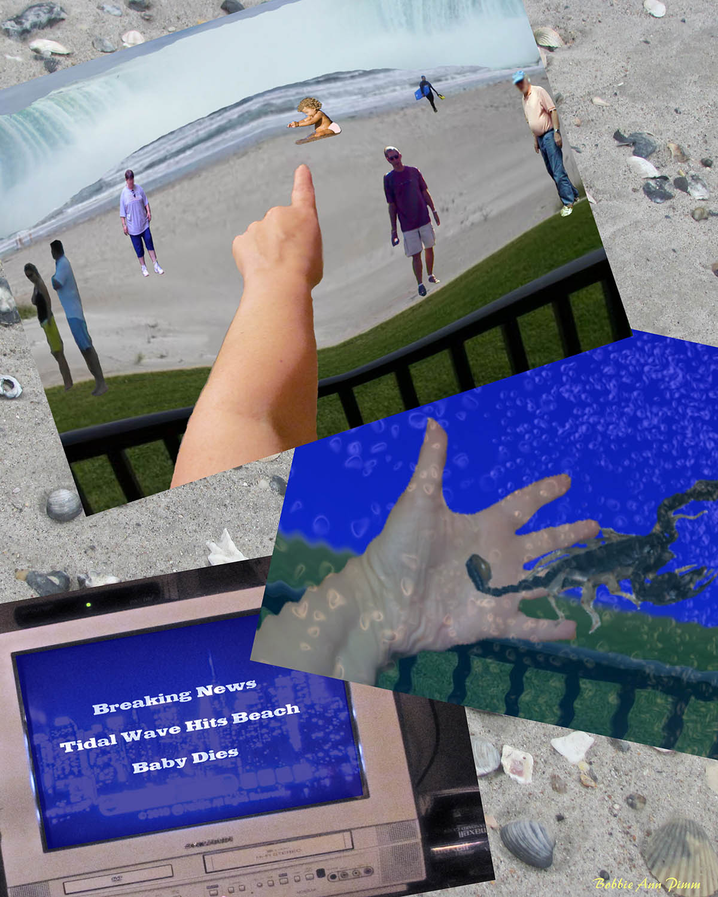

In looking at my dreams, I often see reflections of my negative actions, thoughts, and feelings. By examining them closely and being completely honest with myself, I’ve come to discover who I am, why I am who I am, and more importantly, who I am meant to be. This is an ongoing and continuing process; I am forever changing for the better, which is also reflected in my dreams. This became evident a few months ago when I had a dream that I titled, “Another Tidal Wave,” which reminded me of a previously recurring dream titled, “Water, Water Everywhere.” A comparison of the two was very revealing.
Water, Water Everywhere
I am at the beach, alone. I savor the peace and quiet as the warm surf rolls under my feet tugging gently at my ankles. Suddenly, the water is up to my knees and I find it difficult to walk. I head for shore and I am scared. The shore gets further and further away and the water gets higher and higher.
I see a building in the distance and I know that I must reach it or I will drown. My heart pounds in my chest, as the water continues to get higher and higher. I find myself at the door of the building. I look behind me; the water is about to overtake me. I open the door and make it inside. I know that I am safe.
I look around; the building is empty. I go to a small window and see the water is above the window line. The building is submerged in water, yet I feel safe. The above was a recurring dream I had for over 20 years, starting when I was about 12 years old. It was always the same for many years. At some point, I began to notice a few (one at first, then two or three) other people in the building. When I was about thirty-two years old or so, the window seemed to get larger and larger -- until the walls were literally made of glass, at which point the dreams stopped. I have not had this dream for over fifteen years now.
To understand the interpretation, you should know that there were several incidents in my adolescence that I repressed -- in other words, locked away deep in my unconscious.
The Interpretation: The Ocean signifies that the dream is referring to my unconscious. The water is overtaking me and I am afraid that unless I go inside the building, I will drown. If the water symbolizes my emotions, then the fear of drowning indicates that I was afraid that my emotions would overwhelm me. Therefore, I needed to find shelter from these emotions and went inside the building —inside of myself.
At first, I was alone in the building. At some point, I became aware of other people. These other “people” were actually me. For each repressed incident that occurred in my life, another part of “me” went “inside” where it was safe.
The window allowed me a glimpse of the emotions (the “water”) that I was afraid of. In the beginning, the window was very small, and seeing the water going over the top of it, reinforced my belief that going inside the shelter was the right thing to do--it saved me. The window got larger and larger as I matured and learned how to deal with these emotions that I repressed for so long. In the end, the walls were completely transparent. I no longer needed to hide in the building, as I was no longer afraid of drowning in my emotions. So, the dreams stopped.
Another Tidal Wave
I am on a balcony overlooking a beach. I know that I am not alone. To my left is my “guide” and to my right, I sense two or three women, though I do not see them. Out on the beach I see several people walking. I look out to the ocean and see a huge tidal wave approaching the shore. I start yelling at the people on the beach to run for safety. Then I see a baby on the edge of the surf, alone. I point to the baby and yell at the people to, “Save the baby, save the baby!” Everyone runs off and leaves the baby on the shore alone with the tidal wave getting closer.
The scene shifts slightly. Now I am on the balcony with these same women and my guide, only we are completely underwater, though I am not afraid. I see a scorpion drift by. One of the “women” warns me to be careful as it might sting, but I am drawn to the scorpion and reach out my hand to touch it. It stings me on my palm. I look at my palm, but it doesn’t hurt. I know that I will be OK. The scene shifts again. We have moved inside and I hear a Special News Bulletin on the TV. The announcer is saying, “Tidal wave hits beach, baby dies.” I wake up.
The Interpretation: The similarities to my earlier, recurring Water, Water Everywhere dream are apparent; however there are significant differences. While the beach, ocean and the impending wave are similar and symbolize the same things, my viewpoint, or perspective, is different. In the original dream, I am on the beach and the danger is imminent. In the new dream, I am able to view the impending tidal wave from a higher, safer perspective--a clear sign to me of personal growth. In the original dream, I must seek shelter, or hide. Here, I feel no need to run or hide. Also, in the original dream, I am inside the building with the water all around, while in the more recent one, I remain outside on a balcony, outside of myself (the building); and even when the water overtakes me, I am unafraid and I know I am not alone. The scorpion stings me but I am not hurt.
It so happens that my partner in life and dreams, Bob Van de Castle, is a Scorpio. I know he will not hurt me – and no matter what emotional upheaval occurs, he will be there and I know I will be OK.
The announcement that the baby dies might seem, at first, to be negative or dangerous, but (if the baby signifies an immature part of me, then the baby dying means that this part of me has matured, or I am no longer in need of it. The baby has died and in its place is a mature woman ready to accept and deal with whatever comes -- and I am not alone.
It was only in comparing the recent dream to the older dream that I was able to completely understand and appreciate how far I have come over the years. I am grateful for my dreams and the messages they provide. I know I am on the right path. ∞